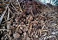

detritus

Definition: In biology, detritus () is dead particulate organic material, as distinguished from dissolved organic material. Detritus typically includes the bodies or fragments of bodies of dead organisms, and fecal material. Detritus typically hosts communities of microorganisms that colonize and decompose (i.e. remineralize) it. In terrestrial ecosystems it is present as leaf litter and other organic matter that is intermixed with soil, which is denominated "soil organic matter". The detritus of aquatic ecosystems is organic material that is suspended in the water and accumulates in depositions on the floor of the body of water; when this floor is a seabed, such a deposition is denominated "marine snow".
Source: Wikipedia
Wikipedia Page
Wikidata Page